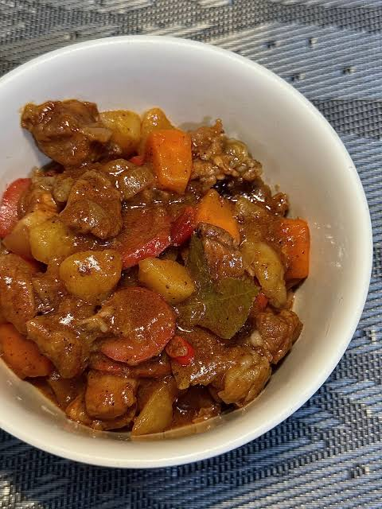

Home

Description
Menudo refers to two completely different, distinct dishes depending on the region. In Mexican cuisine, it is a traditional spicy soup made with beef tripe and hominy in a rich red-chili broth. In Filipino cuisine, it is a hearty, tomato-based stew typically prepared with cubed pork, liver, carrots, potatoes, and hotdogs.
Ingredients
- 2 pounds beef tripe
- 2 onions, chopped
- 4 (15 ounce) cans white hominy
- ¼ teaspoon chili powder
- salt and pepper to taste
Steps
- In a 16 quart pot combine the tripe and the onions. Add water until pot is about 3/4 full.
- Cover and cook on low heat for about 2 hours, or until the tripe is tender
- Add the hominy, chili powder, and salt and pepper to taste
- Cover and cook for another 45 minutes to one hour to incorporate the flavors
- Serve with fresh onions, corn tortillas and lemon if desired.